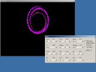
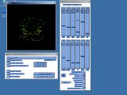
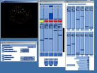
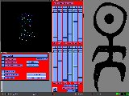
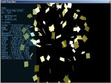
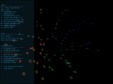

about IGL
IGL is an Open Source port of IrisGL library to OpenGL.
Current version is 0.1.8 which incorporates both Win32 and X11
implementations.
IGL history
i. electro-paint
first, there was electro-paint, an SGI Irix screensaver
written by David A. Tristram.
the screensaver was simple at its base - triangles or squares moving around on the screen -
but so effective that the crowd rejoiced.
everyone wanted the sources, but SGI never released them (or did they?). everyone
wanted to get to know the algorithms used for polygon movement, but it came down
to guessing (polar coordinates etc.).
then, a programmer (me) was enlightened, and the sources were resurrected. electro-paint
was posted to newsgroups by David A. Tristram himself, while still working with NASA.
it was however disguised as a part of the (in)famous Panel Library and - thanks to Google
Groups - the whole package could be downloaded. thanks to
David A. Tristram, the Panel Library and Electropaint sources were made a part of IGL
distribution (as of version 0.1.7).
ii. first steps
initially, i took the electro-paint sources and "converted" them to OpenGL. but since
IrisGL includes window management functions, it didn't make my job any easier. the panel
library also includes a concept of connectable and scriptable sliders and yes, electro-paint
uses them extensively as well. plus the source code almost didn't include any comments, so
there you go.
iii. i will write me a wrapper
yes, it sounds simple. just take an IrisGL function call and convert it to OpenGL. well,
IrisGL contains around 500-600 API calls (just my guess) and they include OpenGL, window
management + menus, device (mouse, keyboard) queueing etc. plus it adds to OpenGL
functionality (editable display lists, callbacks within display lists, concave
polygons etc.). it wasn't easy, so some things aren't supported and some will never be.
i created an account on sourceforge, but due to
the complex process of releasing/managing projects etc., i think i've given up for now.
(can someone explain what the hell happened to CVS? it's supposed to be simple dammit!)
iv. it compiles!
weeks later a functional version was made that could run electro-paint quite well.
some known bugs are still present and very likely a lot of unknown ones. also the
Panel Library relies quite heavily on IrisGL device queueing and there may be a
bug in my code or the library itself (unlikely). i'm still awaiting my SGI machine,
so i may closely examine how everything works there.
v. experiments
before i found out about ep sources, the idea of swirling squares got to me,
so i wrote a couple of screensavers as an homage to the master. the code can
be found in the downloads section, but beware as it contains some bad coding
practices and it's a mess in general, since it contains multiple experiments
bundled in one source. called GLectric, it features some really primitive math
experiments (as i'm not too good in math), interaction with mouse (rotate, move -
see the code) and fake motion blur, cleverly disguised as "clear color buffer"(TM).
i also recently developed a WinAMP plugin called "Sonik Maschine" that uses electro-paint
algorithm framework (but not the Panel Library) while fueling on juicy muzak (see the
'muzak' section). it's in the alpha stage. for help, press F1.
downloads
Panel Library and Electropaint sources are now a part of IGL distribution. David was
really kind and allowed me to do this, so i hope everyone appreciates it as much as i do.
however, Electropaint is now a trademark, so here's a disclaimer:
Panel Library/Electropaint Copyright (c) 1986 David A. Tristram. Electropaint (TM) is a
Registered U.S. Trademark of Tristram Visual. Tristram Visual can be contacted at
www.tristram.com.
- IGL 0.1.8 (source code, ZIP archive) editable display lists + X11 menus added
- IGL 0.1.7 (source code, ZIP archive) IGL now contains Panel Library + ep
- IGL 0.1.6 (source code, ZIP archive) initial release
- my post on electro-paint sources can be found here.
- GLectric 0.1 (Win32 source + binary).
- WinAMP plugin (Win32 binaries)- 'normal' and
IRIS_GT version.
screenshots
|  |
 |
 |
| first steps |
electro-paint in action! |
electro-paint IRIS_GT style |
|  |
 |
 |
| electro-paint on X11 |
Sonik Maschine - WinAMP plugin |
GLectric |
FAQ
actually this section just contains facts.
i. electro-paint
- original version used triangles, not squares.
- it comes in two flavours, screensaver and interactive ("ep -c")
- the algorithm used for movement is both simple and complex.
- i'm not 100% sure, but it doesn't seem to use polar coordinates.
- algorithm for movement relies upon a set of sliders which control the
whole thing. these include "twist", "zoom", "arm", "wheel" etc. some
of the sliders control the general movement, some just the polygon that's
being processed.
- Panel Library provides scripting functionality, meaning that state
of the sliders, buttons etc. can be dumped to a file and re-used.
without scripting, the screensaver mode of electro-paint would not be
a moving.
- there are a few versions of electro-paint available. to my knowledge, source
code is available for early versions only. each Irix version seems to bring
something different to it.
- first version uses colormaps, the next (IRIS_GT) uses lighting,
alpha-blending, additional sliders and RGB mode.
ii. IGL
- this section is no longer needed. documentation is now a part of the distribution.
limitations and bugs
i. limitations
- IGL has no internal multithreading support (does it need one?)
- drawmode() isn't implemented yet
- due to Win32 OpenGL limitations, SetPixelFormat() can only be set once
and thus we can't use acplanes()/stenplanes() etc. properly. (it doesn't
seem to work even if the window is recreated!)
- color map support is emulated through RGB
- font configuration is hardcoded
- a lot of obscure functions like blink(), cyclemap() etc. are not implemented (and
may never be)
- IGL doesn't emulate IrisGL for different IRIX systems (IRIS_NEWS, IRIS_GT,
IRIS_4D), as i don't actually know how they behave
- IGL eats about 25-40% of my CPU. it most probably shouldn't.
- see docs/bugs.txt for more information.
ii. bugs
- Panel Library: windows flicker/aren't properly redrawn (especially IRIS_GT)
- see docs/bugs.txt for more information.
IGL future
Here's a list of things to expect in future versions (by priority):
- better font support
- drawmode () - might be impossible on PC hardware
- feedback buffer
- object picking
- unimplemented API
- Win32/X11 defaults should be adjusted to IrisGL ones.
- device queue and QFULL
- emulating different IRIX systems (not probable)
|
){kind=link}
){kind=link}
){kind=link}
){kind=link}
){kind=link}
){kind=link}